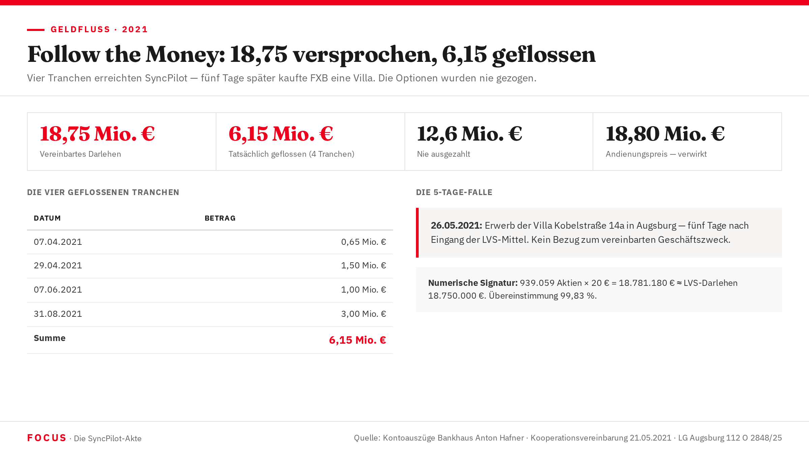

Follow the Money
18,75 Mio. € waren vereinbart. 6,15 Mio. € flossen. 12,6 Mio. € wurden nie gezahlt. Und fünf Tage nach der ersten Überweisung stand Franz Xaver Bleicher als Eigentümer einer Villa im Augsburger Grundbuch. Die Chronik eines Geldflusses.

Sechs geplante Tranchen — vier tatsächliche
Die Kooperationsvereinbarung sah sechs Teilzahlungen vor. LVS überwies vier. Dann hörte das Geld auf zu fließen — aber die Darlehensverpflichtung blieb.
| Tranche | Datum (Plan) | Betrag (Plan) | Datum (IST) | Betrag (IST) | Status |
|---|---|---|---|---|---|
| Tranche 1 | sofort / April 2021 | 0,65 Mio. € | 07.04.2021 | 0,65 Mio. € | Geflossen |
| Tranche 2 | April 2021 | 1,5 Mio. € | 29.04.2021 | 1,5 Mio. € | Geflossen |
| Tranche 3 | Juni 2021 | 1,0 Mio. € | 07.06.2021 | 1,0 Mio. € | Geflossen |
| Tranche 4 | Sommer 2021 | 3,0 Mio. € | 31.08.2021 | 3,0 Mio. € | Geflossen |
| Tranchen 5–6 | 2021–2024 | 12,6 Mio. € | — | 0 € | Nie ausgezahlt |
| Gesamt | 18,75 Mio. € vereinbart | 18,75 Mio. € | 6,15 Mio. € ausgezahlt | 6,15 Mio. € | Δ −12,6 Mio. |
Das Gericht urteilte auf Basis der urkundlich belegten 6,15 Mio. € (Tranche 1–4). FXBs Einwand, die Auszahlungen seien keine Darlehensrückzahlungen sondern Optionsprämien, scheitert an den Kontoauszügen: Das Geld floss auf das Darlehen — nicht auf Prämienkonten. Fälligkeit: 31.12.2024. Nicht bezahlt: bis heute.
Die 5-Tage-Falle: Villa Kobelstraße 14a
Fünf Tage. So lange trennte die Unterzeichnung des Kooperationsvertrags am 21. Mai 2021 vom Eintrag im Augsburger Grundbuch — mit Franz Xaver Bleicher als neuem Eigentümer der Villa Kobelstraße 14a.
Eine Immobilie kauft man nicht in fünf Tagen. Besichtigung, Kaufverhandlung, Notartermin, Auflassungsvormerkung, Grundbucheintrag — dieser Prozess dauert Wochen. Der Notartermin lag damit wahrscheinlich vor dem 21. Mai. Das bedeutet: FXB bereitete den Villenkauf vor, während er noch über das Darlehen verhandelte.
Die forensische Schlussfolgerung: Die Kooperationsvereinbarung war das Finanzierungsinstrument für eine bereits beschlossene Privatentnahme. Kontostand des Unternehmenskontos bei Bankhaus Anton Hafner nach mehr als zwei Jahren: 140.391,42 €. Deckungsquote gegenüber der 6,15-Mio.-Verbindlichkeit: 2,28 %.
21.05.2021
Unterzeichnung Kooperationsvereinbarung — 18,75 Mio. € Darlehensverpflichtung
~Ende Mai 2021
Erste Tranche: 6,15 Mio. € auf SyncPilot-Konto bei Bankhaus Anton Hafner KG, München
26.05.2021
Grundbucheintrag: Franz Xaver Bleicher als Eigentümer Villa Kobelstraße 14a, Augsburg-Pfersee
Stand 2023
Kontostand Bankhaus Anton Hafner: 140.391,42 €
Der Kaufentschluss für die Villa war laut forensischer Analyse bereits vor dem 21.05.2021 gefallen. Damit läge ein Eingehungsbetrug nach § 263 StGB vor: Täuschung bei Vertragsschluss, kein Rückzahlungswille. Verjährungsfrist: 21.05.2026.
Zwei Call-Optionen — niemals ausgeübt
Die Kooperationsvereinbarung vom 21. Mai 2021 räumte LVS zwei Call-Optionen auf Quintus-Anteile ein. Sie waren das Herzstück der Absicherung — und wurden nie genutzt.
Anteile: lfd. Nr. 11.251 – 16.712 (Quintus Beteiligungs GmbH)
Kaufpreis: 7,45 Mio. €
Optionsprämie: 50.000 €
Gesamt: 7,5 Mio. €
Nie ausgeübt
Anteile: lfd. Nr. 16.713 – 22.173 (Quintus Beteiligungs GmbH)
Kaufpreis: 11,15 Mio. €
Optionsprämie: 100.000 €
Gesamt: 11,25 Mio. €
Nie ausgeübt
Hätte LVS beide Optionen ausgeübt, wäre der volle Darlehensbetrag von 18,75 Mio. € durch den Anteilskauf verrechnet worden. Stattdessen ließ LVS die Optionen verfallen — und hält nun ein Darlehensurteil über 6,15 Mio. € plus Zinsen in Händen, während die versprochenen 15 % an SYNCPILOT auf 8,8 % zusammengeschmolzen sind und die Quintus-Satzung nachträglich zuungunsten von LVS geändert wurde.
Das Andienungsrecht: 18,80 Mio. — verwirkt
Ziff. 2.5 der Vereinbarung gab FXB ein Andienungsrecht: Wenn LVS die Call-Optionen nicht ausübt, kann er LVS die Quintus-Anteile für 18,80 Mio. € zwangsverkaufen. Ein theoretischer Joker — der 15 Monate zu spät gezogen wurde.
„Wenn zum Laufzeitende des Darlehens (31.12.2024) bzw. beim Exit die Call Optionen vom Investor nicht ausgeübt … worden sind, ist FXB berechtigt, dem Investor die Quintus-Anteile für einen Preis von € 18,80 Mio. (‚Andienungspreis') anzudienen und Investor für diesen Fall verpflichtet, die Quintus-Anteile zu erwerben."
FXB wartete. Die Fälligkeit des Darlehens passierte am 31.12.2024. Monate vergingen. Erstmals erwähnte FXB das Andienungsrecht in einem Schriftstück vom 06.10.2025 — Anlage B12 im Gerichtsverfahren. Ausgeübt wurde es erst am 07.04.2026 — rund 15 Monate nach Fälligkeit.
In dieser Wartezeit änderte sich die Welt unter LVS' Füßen: Die SYNCPILOT-Beteiligung schrumpfte von angestrebten 15 % auf erreichbare 8,8 %. Die Quintus-Satzung wurde nachträglich mit einer 60-%-Abfindungsklausel versehen. Das Gericht wertete beides als Umstandsmoment der Verwirkung — kombiniert mit dem Zeitmoment von 15 Monaten das Todesurteil für FXBs Gegenrechte.
Ein Zufall mit 0,17 % Abweichung
BOSYNC Beteiligungs UG hielt im September 2020 rund 50,95 % der SyncPilot-Aktien — rund 2.584.858 Stück. Im März 2023, nach der großen Offshore-Kapitalerhöhung, hielt BOSYNC noch 23,54 % — und hatte damit rund 939.059 Aktien verloren.
Multipliziert man diese 939.059 verlorenen Aktien mit dem Emissionspreis der Mai-2023-Runde (20 €/Aktie), ergibt sich: 18.781.180 €.
Das LVS-Darlehen belief sich auf: 18.750.000 €.
Die Differenz: 31.180 € — eine Abweichung von 0,17 %.
Die Forensik nennt dies die „numerische Signatur des Tunneling-Schemas": Das Darlehen wurde durch die Verwässerung eins zu eins aus der Gesellschaft herausgezogen — in eine Offshore-Architektur aus Malta, Luxemburg und Liechtenstein.
| BOSYNC-Verlust (Aktien) | 939.059 |
| × Referenzpreis Mai 2023 | × 20,00 € |
| Wert der verlorenen Aktien | 18.781.180 € |
| LVS-Darlehen | 18.750.000 € |
| Differenz | 31.180 € (0,17 %) |
30/30
Maximum der BKA-Forensikmethodik — KRITISCH
Der Perseus-Trick: 1 Euro statt 18,96 Euro
Parallel zum LVS-Darlehen floss ein zweiter Geldstrom — in umgekehrter Richtung, aber mit umgekehrten Vorzeichen. Im März 2023 erhielt die H.G. Perseus GmbH StbG (Gesellschafter: RA Martin Hunstein und Diethard Goerg) 127.885 SyncPilot-Aktien zu einem Emissionspreis von 1,00 €/Stück.
Tatsächlicher Marktwert zum selben Zeitpunkt: 18,96 €/Aktie. Marktwert des gesamten Perseus-Pakets: 2.424.500 €. Gezahlt: 127.885 €. Verdeckter Vermögenstransfer: 2.296.615 €.
Wenig später wechselte Perseus die Jurisdiktion: von Deutschland nach Malta (C 101759). Das Drei-Hüte-Problem: RA Hunstein war gleichzeitig Prozessanwalt für FXB im LVS-Verfahren, Gesellschafter von Perseus ISH und mutmaßlicher Berater bei der Malta-Strukturierung. Nach Ansicht der Strafanzeige: § 356 StGB — Parteiverrat.
Pictet Asset Management finanziert die SYNCPILOT-Gruppe über seine European Direct Lending Strategy. Geschätztes Volumen: 15–40 Mio. €. Forensische Hypothese: FXB offenbart die LVS-Verbindlichkeit von 18,75 Mio. € gegenüber Pictet nicht. Rechtsberatung Pictet: Hogan Lovells München (Dr. Thomas Freund + Team).